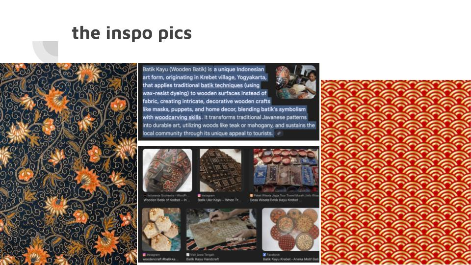
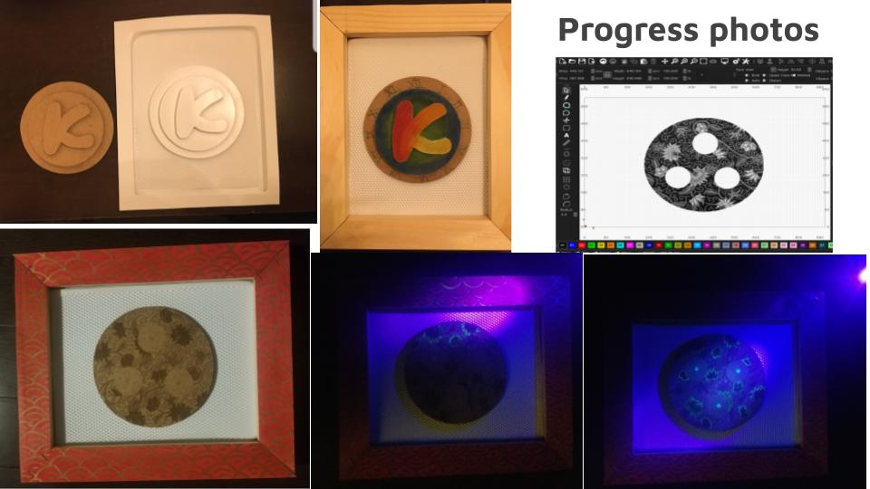

Project Audio
Dec 8, 2025
This audio piece is a quick audio story of a person who drink and drove, and was distracted on the road with the radio and phone. They crashed, so my message would be no drinking and driving, and pay attention to the road.
Project was done on Reaper for CRTE 1000Time_Travel
Oct 6, 2025
This video is a short time travel film on the memories of 2024 featuring my own photos and videos in a capsule
Project was done on DaVinci Resolve for PANF 1100Hybrid Media Installation
Dec 7, 2025

This project was a multi step Installation and documentation, The above shows my inspiration images for my piece.
Image below shows photos of the creation progress. Project was compleated for CRTE 1100

The focus of my project was on emphasizing cultural patterns, staring Batik Kayu. The outer frame is covered in Chinese-inspired patterns that resemble dragon scales. The inner round piece has two sides. The side with the “K” represents my childhood and past, when I felt disconnected from my Indonesian culture. As a Canadian Chinese–Indonesian child who looked fully Chinese and had mostly Chinese friends, people always assumed I was only Chinese. Subconsciously, I identified that way too, and I forgot the Indonesian part of myself. Fast-forward to the present, which is represented on the opposite side of the “K”, where I engraved Batik-inspired patterns. Many high-quality Batik pieces I’ve seen have a consistent theme or story woven throughout. Inspired by that, I intentionally left blank circular areas in the engraving to represent my evolving story. Another feature I added is hidden details that appear under UV light, which brings out more depth in the pattern, representing that you have to focus in on a person to get to know them.